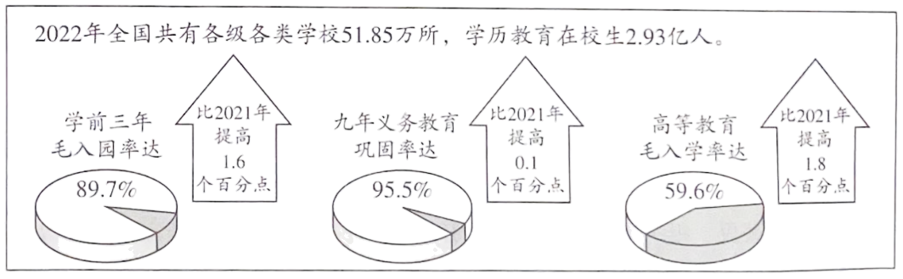

2023年北京中考道德与法治 第12题 解析
12. 建设教育强国是全面建成社会主义现代化强国的战略先导。上图是2022年我国教育事业发展取得的成绩单，由此可推断出（ ）

A. 教育是决定当代中国命运的关键抉择
B. 我国发展更加公平更高质量的教育
C. 我国各级各类学校数量有所增加
D. 我国建成全民终身学习的现代教育体系
【答案】B
【解析】
【详解】本题考查维护公平的举措。
B：题文中列举了我国教育事业发展取得的成绩，由此可知我国重视教育，致力于发展更加公平更高质量的教育，B说法正确；
A：改革开放是决定当代中国命运的关键抉择，A说法错误；
C：题文中体现的是我国教育事业的高质量发展，不仅仅是各级各类学校数量的增加，C说法错误；
D：我国还没有建成全民终身学习的现代教育体系，D说法错误；
故本题选B。